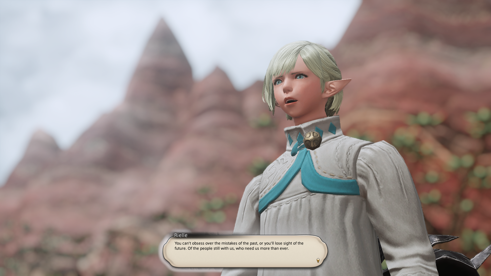

It's not just a joke when the community promotes the well beloved Mass Multiplayer Online Roleplay Game. FFXIV has been out for 10 years now,
and as someone who has played since patch 2.5 (the last A Realm Reborn patch before Heavensward), I have thoroughly enjoyed my time
(of 15,950.4 hours at this time). When others ask me about the reputations that are held within the games community: player race reputations,
community, etc.; I would try to suggest them to try the game themselves and form their own opinions. But also to keep their wits about them when
interacting with others like real life.

Well written stories.
Meaningful Connections Worldwide
P12S Clear Group Photo
For all the time I've spent on FFXIV, I've never met a more welcoming and supportive group of people. The connections I've developed with my friends are no
different from people offline. It doesn't matter to me whether we're cities, states, or continents apart. It's the bond we've forged through our shared experiences,
shared hobbies, and private conversations.